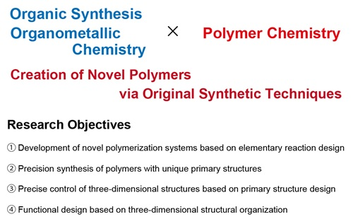
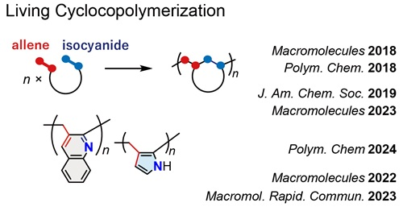
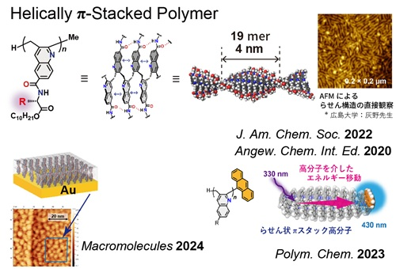
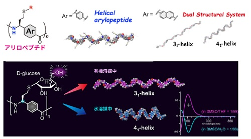

Kyoto Institute of Technology Department of Applied Chemistry, Polymer Materials Design Course
Polymer Synthesis Laboratory KAMBAYASHI LAB.
Research
The physical properties and functions of polymers are greatly influenced by their main-chain structure. Therefore, a variety of synthetic methods have been developed to create novel polymeric materials. Our research focuses on the development of elementary reactions and precision polymerizations based on organic and organometallic chemistry, aiming to construct new polymer skeletons and control their three-dimensional structures and functions through original synthetic techniques.





Copyright © 2025
Kanbayashi Lab, Kyoto Institute of Technology.